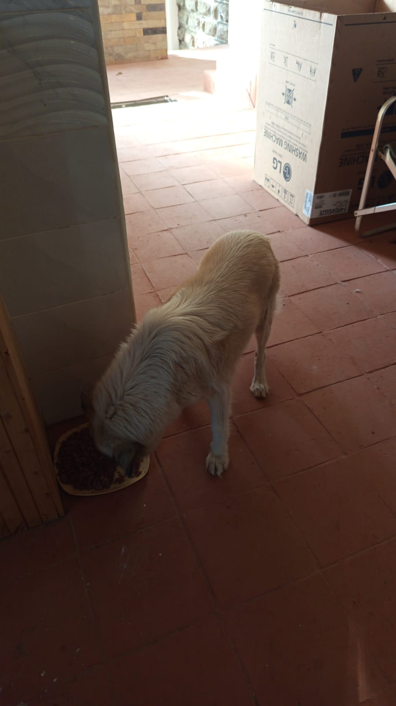

Mucheru World of Golf
Operations at Mucheru World of Golf on Tuesday, 13th October 2026 maintained exceptional momentum across civil machinery excavation, underground drainage assembly, agronomic rootzone spreading, and precision teebox platform contouring:
Agronomic Surplus Soil Milestone Achieved
All surplus red soil leveling across the remaining greens has now reached 100% completion course-wide. Every green now features smoothly blended, settled, and leveled red soil surrounds, setting an established base for perimeter shaping and fairway transitions.
- Main Collector Drainage Trench Excavation: Githinji's team deployed the Backhoe Loader (JCB KHMA 399H) to excavate the primary collector drainage trench across the course fairway corridors. This larger, deep continuous trench serves as the central drainage conduit into which all individual green drainage outlets will discharge stormwater runoff.
- Trench Bed Manual Grading & Pipe Placement: Ground labor teams utilized shovels and jembes to manually clear loose soil, dress trench sidewalls, and grade the trench floor before placing orange PVC drainage pipes to guarantee positive gravitational runoff.
- PVC Drainage Pipe Installations (Greens 18, 11, 17 & 13): Orange PVC drainage pipes were successfully laid, aligned, and fitted with 90-degree directional elbow connections at Greens 18, 11, 17, and 13, establishing direct hydraulic connections from the greens into the main drainage discharge network.
- Red Soil Logistics at Dam 3: Material delivery logistics received 1 tipper lorry load of fertile red topsoil, unloaded and stockpiled near the Dam 3 basin to support upcoming perimeter bank grading and slope stabilization.
- Riversand Spreading on Greens 1, 11 & 16: Agronomy crews spread and raked washed golden river sand over the compacted pumice subgrade on Green 1, Green 11, and Green 16. Spreading and leveling on Greens 1 and 11 reached finished levels, while Green 16 progressed actively with pumice stone sections still being systematically covered.
- Teebox Refining Completed (Teeboxes 10 & 11): Labor teams completed detailed manual earthwork refinement and grading on Teeboxes 10 and 11, shaping the elevated launch platforms to uniform elevations and clean perimeter edges.
- Irrigation Trench & Pop-up Demarcation: Survey teams used white lime to demarcate the exact perimeter trench alignments and pop-up sprinkler positions on Greens 13 and 16 along the outer red soil collars, preparing them for upcoming trenching and pipe installation.
- Water Reservoir Status: Lined Dam 1 continues to hold an extensive volume of captured water across its geomembrane base, securing vital irrigation water reserves for the course.
18-hole putting green status audit showing the latest work completed and current condition for each green as of October 13, 2026:
| Green | Current Technical & Agronomic State | Milestone Status |
|---|---|---|
| Green 1 Today | Riversand spread and leveled over pumice bed across green surface (Oct 13). | Riversand Leveled |
| Green 2 | Riversand spread and leveled over pumice bed; surplus red soil leveled along surrounds; pop-up sprinklers measured and marked (Oct 11). | Riversand Leveled |
| Green 3 | Riversand spread and leveled over pumice bed; surplus red soil leveled along apron and bank; pop-up sprinklers measured and marked (Oct 11). | Riversand Leveled |
| Green 4 | Riversand spread and leveled over pumice bed; surplus red soil leveled along surrounds; pop-up sprinklers measured and marked (Oct 11). | Riversand Leveled |
| Green 5 | Connected PVC pipes to green outlet drainage trench for excess runoff and sprinkler lines (Oct 9). | Drainage PVC Connected |
| Green 6 | Surplus red soil spread around outer surrounds and leveled (Oct 12). | Surplus Red Soil Leveled |
| Green 7 | Riversand applied over pumice bed and precisely leveled across entire green surface (Oct 10); pop-up sprinklers measured and marked (Oct 11). | Riversand Leveled |
| Green 8 | Riversand spread and leveled over pumice bed; surplus red soil leveled along surrounds; pop-up sprinklers measured and marked (Oct 11). | Riversand Leveled |
| Green 9 | Riversand spread and leveled over pumice bed; surplus red soil leveled along surrounds; pop-up sprinklers measured and marked (Oct 11). | Riversand Leveled |
| Green 10 | Surplus red soil spread around collar and outer surrounds and leveled (Oct 12). | Surplus Red Soil Leveled |
| Green 11 Today | Drainage PVC pipes installed in leveled trenches; riversand spread and leveled over pumice bed (Oct 13). | Riversand • PVC In |
| Green 12 | Surplus red soil (from 1 truck delivery) applied and leveled around collar and surrounds (Oct 2); pop-up sprinklers measured and marked (Oct 11). | Surplus Red Soil Applied |
| Green 13 Today | Drainage PVC pipes installed; irrigation trench lines and pop-up locations marked with lime (Oct 13). | PVC Installed • Marked |
| Green 14 | Surplus red soil spread around collar and outer surrounds and leveled (Oct 12). | Surplus Red Soil Leveled |
| Green 15 | Surplus red soil spread around outer surrounds and leveled (Oct 12). | Surplus Red Soil Leveled |
| Green 16 Today | Riversand leveling in progress over pumice bed; irrigation trench lines and pop-up locations marked (Oct 13). | Riversand in Progress |
| Green 17 Today | Drainage PVC pipes installed and aligned in leveled trenches (Oct 13). | Drainage PVC Installed |
| Green 18 Today | Drainage PVC pipes installed and aligned in leveled trenches (Oct 13). | Drainage PVC Installed |
Comprehensive 18-hole championship teebox platform audit tracking earthwork leveling, structural embankments, and playing corridor alignments as of October 13, 2026:
| Teebox | Current Technical & Earthwork State | Platform Status |
|---|---|---|
| Tee 1 | Championship launch platform completely reshaped, cut, and graded to design elevation using Backhoe Loader (Sep 24); received 1 lorry red soil delivery (Sep 26). | Platform Reshaped |
| Tee 2 | Playing launch platform completely reshaped, contoured, and graded using Backhoe Loader (Sep 24); received 1 lorry red soil delivery (Sep 26). | Platform Reshaped |
| Tee 3 | Playing launch platform completely reshaped, contoured, and graded using Backhoe Loader (Sep 24); received 1 lorry red soil delivery (Sep 26). | Platform Reshaped |
| Tee 4 | Championship launch platform completely reshaped, cut, and graded using Backhoe Loader (Sep 23); received 1 lorry red soil delivery (Sep 26). | Platform Reshaped |
| Tee 5 | Main perimeter drainage pipeline backfilled all the way past Maina's place (Oct 2). | Drainage Backfilled |
| Tee 6 | Precision leveling and compaction completed; fresh delivery of 1 lorry red loam topsoil unloaded at platform surrounds (Sep 26). | Red Soil In • Leveled |
| Tee 7 | Both number 7 teebox platforms actively reshaped, cut, and leveled by crew under Joe Kamau and supervisors (Oct 4). | Both Platforms Reshaped |
| Tee 8 | Graded, leveled, and contour-adjusted; fresh delivery of 1 lorry red loam topsoil unloaded directly on platform (Sep 26). | Red Soil In • Graded |
| Tee 9 | Playing platform leveled and surrounding perimeter ground graded (Sep 1); received 1 lorry red soil delivery (Sep 26). | Platform Leveled |
| Tee 10 Today | Playing launch platform shaping and surface refinement completely finished (Oct 13). | Platform Refined |
| Tee 11 Today | Playing launch platform grading and contour refinement completely finished (Oct 13). | Refinement Complete |
| Tee 12 | Both championship and forward platforms actively shaped, leveled, and refined to finished design elevation (Oct 8). | Shaped & Refined |
| Tee 13 | Playing platform earthworks completely finished, shaped, and refined to final design elevation and contours (Oct 7). | Finished & Refined |
| Tee 14 | Launch platform earthworks completely finished, shaped, and refined to final playing contour (Oct 7). | Finished & Refined |
| Tee 15 | Launch platform shaping completely finished; terrace cut to design elevation and precision leveled (Oct 6). | Platform Reshaped |
| Tee 16 | Surplus red soil moved onto platform; launch terrace completely reshaped and leveled (Oct 5). | Platform Reshaped |
| Tee 17 | Launch platform reshaped, cleared of brush, and graded to playing corridor alignment (Oct 6). | Platform Reshaped |
| Tee 18 | Championship tee platform leveled; perimeter approach cleared and graded (Sep 1); received 1 lorry red soil delivery (Sep 26). | Platform Leveled |
Operations Agronomy & Engineering Synthesis
Putting Greens & Hydraulic Milestones: 100% of all greens have now completed surplus red soil leveling across the course; drainage PVC pipes successfully installed at Greens 18, 11, 17, and 13; main green drainage discharge trench actively excavated by Backhoe Loader; riversand leveling completed on Greens 1 and 11, with Green 16 actively in progress; irrigation trench lines and pop-up locations marked with lime on Greens 13 and 16; Dam 3 received 1 lorry red soil delivery; Dam 1 holding significant water reserve.
Championship Teebox Platforms: 100% of teebox platforms leveled or refined; platform shaping and grading completely finished on Teeboxes 10 and 11 today; playing corridors aligned for grassing phase.
Comprehensive field video documentation capturing Tuesday's operations at Mucheru World of Golf: Backhoe Loader excavation of the primary green drainage discharge trench, manual leveling of trench beds, installation and fitting of orange PVC drainage pipes at Greens 18, 11, 17, and 13, complete surplus red soil leveling across remaining greens, riversand spreading on Greens 1, 11, and 16, platform refinement on Teeboxes 10 and 11, and white lime marking for irrigation pipe routes on Greens 13 and 16.
On-site field recording demonstrating the Backhoe Loader (JCB KHMA 399H from Githinji's team) actively excavating the deep, continuous main drainage trench. This trench serves as the central drainage collector where all individual green drainage outlets across the course will convey and discharge their runoff.
Photographic field documentation capturing drainage canal excavation, PVC pipe installation, teebox refinement, agronomic riversand spreading, material delivery, and irrigation demarcation across Mucheru World of Golf:

Backhoe Loader Excavating Main Green Drainage Trench
Backhoe Loader (JCB KHMA 399H) actively trenching the larger continuous outlet canal where all greens drainage pipes will discharge excess water.

Backhoe Trenching Main Discharge Channel Alignment
Deep trenching profile opened by the Backhoe Loader bucket, forming the primary drainage corridor across the fairway terrain.

Main Outlet Drainage Trench Excavation Profile
Long, continuous collector trench opened along the course alignment, with excavated earth banked alongside ready for base grading.

Manual Trench Base Grading Before Pipe Laying
Ground crew manually grading and leveling the trench bed with hand tools to ensure proper slope before laying orange PVC pipes.

Ground Crew Fine-Tuning Drainage Trench Bed
Workers using jembes and shovels inside the trench to clear loose earth and achieve an even bedding gradient for pipes.

PVC Drainage Pipe Seated in Leveled Trench
Orange PVC drainage pipe seated inside the precisely graded trench floor leading toward the green collar and sub-base.

90-Degree PVC Elbow Bend Installed at Green Perimeter
Installed orange PVC drainage pipe fitted with an elbow connection at the green perimeter to direct water into the main outlet.

PVC Drainage Pipe Alignment and Directional Fitting
Precision pipe jointing and elbow bend positioned in the leveled trench, establishing positive gravity drainage flow.

Continuous PVC Drainage Pipe Run Laid in Trench
Straight run of connected PVC drainage pipe seated securely along the graded fairway trench line.

Red Soil Delivery at Dam 3 Reservoir
One tipper lorry load of fertile red topsoil offloaded near Dam 3 basin, staged for bank contouring and landscaping.

Dam 1 Reservoir Storage Status
Lined Dam 1 holding a substantial volume of captured water across the geomembrane base, supporting irrigation staging.

Spreading and Leveling Riversand on Green 16
Ground crew using rakes to distribute and level the pale river sand rooting layer over the pumice subgrade on Green 16.

Riversand Layer Application Across Green Bed
Agronomic team spreading golden river sand across the pumice profile, progressing toward full surface coverage.

Teebox 10 Platform Earthwork Refinement Completed
Team of workers utilizing shovels and wheelbarrows to shape, level, and refine the elevated launch platform of Teebox 10.

Teebox 11 Platform Grading and Contouring Finished
Labor crew spreading and grading red soil across Teebox 11 along the perimeter boundary line to achieve final design elevation.

Marking Irrigation Line and Sprinkler Positions on Green 13
Crew using white lime to demarcate the precise perimeter trench route on the red soil collar for PVC pipes and pop-up sprinklers.

Full Perimeter Irrigation Marking on Green 13
Wide view of Green 13 showing the continuous white line marked along the outer red soil apron and elevation marker flags in place.
Chaka Farms
Operations at Chaka Farms on Tuesday, 13th October 2026 prioritized fully reconciled dairy milking production, prompt veterinary isolation for a sick kid, farm machinery service, lawn grooming, and structured canine care:
Farm Operational Highlights
Dairy milking achieved 7.0 Litres gross harvest with 6.0 Litres dispatched for commercial sale and 1.0 Litre allocated on-farm, maintaining 100% accounting reconciliation. Compound grass trimmers were successfully serviced by a technician and immediately put to work grooming the main lawn.
- Reconciled Dairy Production: The dairy unit recorded a total gross milk yield of 7.0 Litres (4.5L morning session + 2.5L evening session). Commercial sales totaled 6.0 Litres (3.5L morning + 2.5L evening). Routine internal farm allocations accounted for 1.0 Litre (0.5L Gladys staff ration + 0.5L Kamau), ensuring 100% reconciliation in Litres with zero discrepancy.
- Livestock Veterinary Isolation: One goat kid was identified as unwell during morning herd health inspections. The kid was immediately separated and sheltered in a clean stall, with a qualified veterinary doctor scheduled to visit the farm to conduct an examination and prescribe treatment.
- Farm Machinery Maintenance: A specialist fundi (technician) visited Chaka Farms to perform maintenance and tuning on the compound motorized brush cutter / grass trimmer, replacing worn spark plugs and tuning the engine to restore smooth operation.
- Main Compound Lawn Trimming: Following completion of trimmer servicing, a grounds operator in protective overalls operated the machine to trim and edge the main compound lawn grass, with grounds staff sweeping up cut clippings.
- Canine Nutrition Delivery: Ken coordinated the receipt of 6 packaged trays of fresh minced dog food delivered to the farm, ensuring sufficient dietary rations for the working canine unit.
- Canine Unit Care: Mwangi managed daily canine unit routines, including thorough sanitation of kennel stalls, cooking balanced meals for the dogs, and conducting afternoon leash walks.
- Compound Cleanliness: Margaret and Monica ensured general estate cleanliness, sweeping walkways and maintaining the grounds in orderly condition.
Official quantitative dairy milking harvest and sales ledger for Tuesday, 13th October 2026, recording gross yields, commercial dispatches, and internal farm disbursements strictly in Litres:
| Category / Transaction | Morning Session | Evening Session | Daily Total |
|---|---|---|---|
| Gross Milk Harvested | 4.5 Litres | 2.5 Litres | 7.0 Litres |
| Commercial Milk Sales (Dispatched) | 3.5 Litres | 2.5 Litres | 6.0 Litres |
| Internal Farm Allocation — Gladys (Staff) | 0.5 Litres | — | 0.5 Litres |
| Internal Farm Allocation — Kamau | 0.5 Litres | — | 0.5 Litres |
| Internal Farm Allocation — Goat Kids (Weaned) | 0.0 Litres | 0.0 Litres | 0.0 Litres |
| Total Volume Accounted For | 4.5 Litres | 2.5 Litres | 7.0 Litres (100% Reconciled) |
Dairy Accounting & Livestock Note
Total gross milk harvested of 7.0 Litres is fully accounted for by 6.0 Litres sold commercially and 1.0 Litre in routine farm disbursements (0.5L Gladys + 0.5L Kamau). One sick goat kid is isolated in the stall and awaiting veterinary consultation.
Photographic field documentation capturing grass trimmer maintenance, compound lawn grooming, and fresh canine food delivery at Chaka Farms:

Technician Servicing Motorized Grass Trimmer
Fundi performing maintenance and tuning on the engine of the compound motorized grass cutter with replacement plugs and hand tools.

Engine Tuning and Carburetor Adjustment
Mechanic making adjustments to the brush cutter motor and throttle assembly to restore optimal cutting performance.

Trimming Main Compound Lawn Grass
Grounds operator in green overalls using the serviced grass cutter to groom the estate lawn, with crew sweeping in the background.

Delivery of Minced Dog Food Rations
Six packaged trays of fresh minced dog food delivered to the farm store for the canine unit daily dietary provisions.
Kabete Residence
Operations at Kabete Residence were overseen and shared by Njoki on Tuesday, 13th October 2026, advancing critical structural concrete pours, mechanical compaction, water curing, and domestic pet welfare:
Structural Engineering Progress
Masons executed concrete pouring for structural columns using an immersion poker vibrator to ensure void-free compaction, while continuous water curing was maintained across foundation walls and the forest river retaining wall.
- Column Steel Reinforcement Concrete Works: Structural building teams carried out concrete pouring for reinforced vertical column cages, carefully placing wet concrete mix into the wooden formwork casing.
- Immersion Poker Vibrator Compaction: To achieve solid density and eliminate honeycomb voids, site masons used a motorized immersion poker vibrator, inserting the vibrating needle deep into the wet concrete mix between rebar bars.
- Water Curing of Foundation Walls: The masonry sub-structure foundation walls received consistent water curing to facilitate proper cement mortar hydration and structural strength.
- Forest River Retaining Wall Curing: The stone masonry retaining wall located in the forest along the river area was thoroughly soaked with water for curing, with embedded PVC weep holes functioning properly to relieve hydrostatic pressure.
- Capping Beam Bar Formwork on Retaining Wall: Steel fixers advanced formwork preparation and rebar assembly for the capping beam along the top of the forest river retaining wall, tying the horizontal reinforcement bars and stirrups.
- Domestic Pet Welfare: Ajabu the Golden Retriever was fed on the tiled veranda, and resident cats Reo, Mocha, and Aiko were fed side-by-side from their stainless steel bowls.
Photographic field documentation capturing column concrete pouring, mechanical vibration, wall water curing, retaining wall beam rebar, and domestic pet care at Kabete Residence:

Ajabu Feeding on the Veranda
Ajabu the Golden Retriever feeding comfortably on the tiled veranda at Kabete Residence.

Reo, Mocha & Aiko Feeding Together
Resident cats Reo, Mocha, and Aiko side-by-side enjoying their fresh meals from stainless steel bowls.

Pouring Concrete Mix into Column Rebar Formwork
Mason pouring wet structural concrete from a bucket into the wooden formwork casing surrounding vertical column rebar.

Column Concrete Placement and Formwork Reinforcement
Overhead perspective of concrete pouring into the column formwork with steel reinforcement bars held securely in position.

Vertical Column Rebar Cage and Excavated Pit
View looking down into the column excavation showing the tied steel rebar cage, stirrups, and wooden formwork shuttering.

Immersion Vibrator Consolidation of Column Concrete
Site workers operating an immersion poker vibrator to consolidate wet concrete and eliminate air pockets around the rebar.

Mechanical Vibration of Structural Column Concrete
Mason guiding the immersion vibrator needle through the column core to ensure dense, void-free concrete compaction.

Immersion Poker Vibrator in Operation at Column Base
Vibrator flexible shaft inserted deep into the column formwork mix, ensuring complete cement paste penetration around rebar.

Water Curing of Forest River Retaining Wall
Substantial stone masonry retaining wall at the river area thoroughly saturated with water for curing, showing embedded weep holes.

Water Curing of Foundation Sub-Structure Walls
Sub-structure stone masonry foundation walls receiving continuous water hose saturation to promote maximum mortar hydration.

Retaining Wall Capping Beam Rebar and Formwork Prep
Worker on the forest retaining wall assembling the horizontal reinforced steel beam cage and stirrups ahead of formwork shuttering.